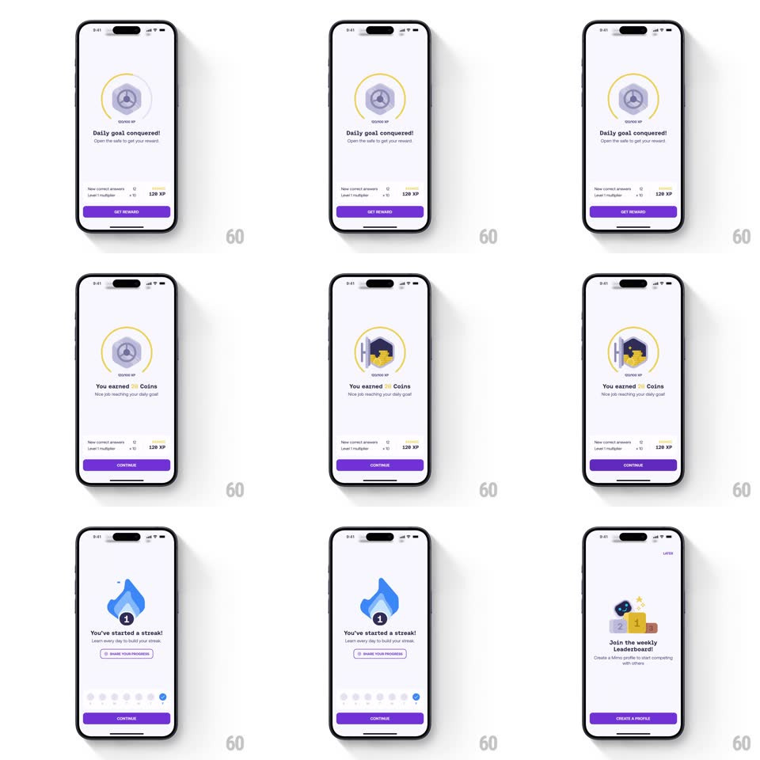

Media
Frame-by-frame

Rebuild this interaction 1:1: Mimo's end-of-chapter reward sequence - robot calculates progress, a locked safe offers "Daily goal conquered! Open the safe to get your reward", the safe door swings open revealing coins ("You earned 24 Coins"), then slides sideways to a streak flame ("You've started a streak!") and a leaderboard invite.

Rebuild this interaction 1:1: Mimo's end-of-chapter reward sequence - robot calculates progress, a locked safe offers "Daily goal conquered! Open the safe to get your reward", the safe door swings open revealing coins ("You earned 24 Coins"), then slides sideways to a streak flame ("You've started a streak!") and a leaderboard invite.
## Integration
Integration: stack-agnostic spec - springs given as stiffness/damping, timed motions as duration + curve; map every value to your framework and animation library of choice.
## Scene
Light purple screens: robot mascot "Calculating your progress..."; safe inside a yellow XP ring with GET REWARD button and stat rows (New correct answers, Level 1 multiplier, 120 XP); open safe spilling coins with CONTINUE; blue streak flame with day-dots week row and Share your progress link; leaderboard podium ("Join the weekly Leaderboard!") with CREATE A PROFILE and LATER.
## Motion spec
Pattern: staged reward reveal with horizontal slide-through.
- Robot pulses while "Calculating your progress..." shows an animated ellipsis (1s); the safe + ring pop in (scale 0.6 -> 1, spring ~320/20, ~450ms) and the ring draws a full circle (700ms).
- Tap GET REWARD: the safe door rotates open on its hinge (rotateY 0 -> -110deg, spring ~240/18, ~600ms) and coins spill out with gravity + bounce (staggered 30ms); "You earned 24 Coins" counts up from 0 (500ms).
- Tap CONTINUE: the whole content slides left off-screen while the streak card slides in from the right (300ms ease-in-out, shared horizontal travel); the flame pops in (scale 0.5 -> 1, spring ~380/17) with its "1" badge.
- Week day dots fill left-to-right (40ms stagger); Share link fades in.
- Next CONTINUE repeats the slide to the leaderboard card; podium pops the same way; LATER fades in top-right.
## Calibration
- Every screen transition uses the same horizontal slide - one metaphor for "next reward".
- The coin count and the safe door are simultaneous; the door never opens before the tap.
## Reduced motion
Cards crossfade instead of sliding; the safe door crossfades open.
## Don't miss
- Stat rows sit under the safe on both the locked and earned states - layout continuity.
- The streak flame badge uses a filled black circle with the streak count.